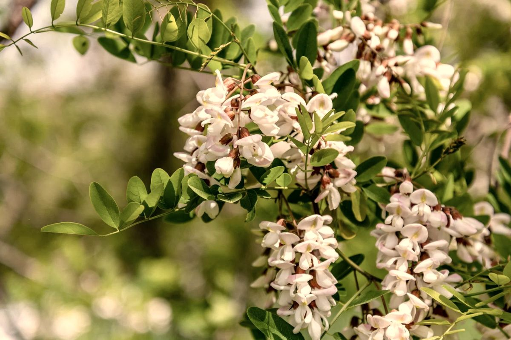

Акациевый мёд — один из самых нежных и светлых сортов. Это первый большой мёд нашего сезона, и именно с акации у нас начинается откачка.
Акациевый мёд пчёлы делают из нектара белой акации. Ботанически это робиния: дерево с длинными белыми кистями, которое растёт вдоль дорог, в лесополосах и садах по всей Украине. Нектар акации очень сладкий, а мёд из него получается светлым, почти прозрачным, со слабым соломенным оттенком.
Акация цветёт в конце весны или в начале лета, примерно две недели. Пчёлы приносят нектар только в тёплую безветренную погоду: заморозок, дождь или сильный ветер в эти дни могут сократить медосбор, а то и испортить его совсем. Поэтому акациевого мёда в одни годы много, а в другие совсем мало. Об этом же и почему мёд каждый год разный.
В нём фруктозы больше, чем глюкозы, а кристаллы образует именно глюкоза. Поэтому акациевый мёд может месяцами, а то и дольше оставаться жидким. Но и он рано или поздно густеет, и это нормально: подробнее в статье о кристаллизации.
Как и любой мёд, акациевый состоит в основном из углеводов (фруктозы и глюкозы) и воды, а также из ферментов, органических кислот (яблочной, лимонной, молочной), аминокислот, минералов и антиоксидантов. Калорийность около 317 ккал на 100 г. Полный перечень компонентов есть на странице «Польза мёда».
Держите его в плотно закрытой стеклянной банке, в сухом, прохладном и тёмном месте. Если мёд загустел, поставьте банку в тёплую водяную баню, не выше 40 °C. Подробно: «Как хранить мёд» и «Можно ли греть мёд».
Бывает ли акациевый мёд каждый год?
Нет. Акация цветёт недолго, и погода часто вмешивается. Иногда акациевого мёда получается мало.
Чем акациевый мёд отличается от липового?
Акациевый светлее, почти без выраженного аромата и долго остаётся жидким. липовый мёд имеет свежий аромат с мятной ноткой и густеет быстрее. Все сорта сравниваются на странице «Сравнение сортов».
Правда ли, что акациевый мёд не кристаллизуется вообще?
Нет. Он просто делает это дольше других сортов. Кристаллизация не значит, что мёд испортился.